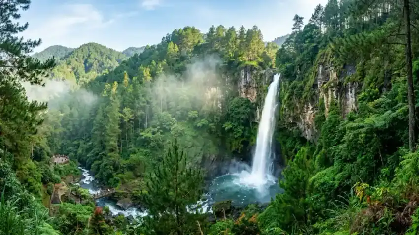

Menyusun susunan acara (rundown) untuk kegiatan Company Gathering atau Outbound Perusahaan sering kali menjadi tantangan terbesar bagi panitia internal atau HRD. Jadwal yang terlalu padat membuat peserta kelelahan fisik, sedangkan jadwal yang terlalu longgar membuat esensi kebersamaan hilang.
Di kawasan alam terbuka seperti Coban Rondo Malang, faktor cuaca sejuk pegunungan, kontur hutan pinus, dan ritme biologis peserta menjadi kunci sukses acara. Berikut adalah 7 langkah strategis merancang rundown gathering profesional:
1. Tentukan Tujuan Utama Acara (Core Objective)
Sebelum menentukan jadwal jam demi jam, sepakati tema besar acara. Apakah fokus tahun ini adalah Sinergi Lintas Divisi pasca-merger, Leadership Grooming, atau murni Stress Release & Fun Gathering? Tujuan ini menentukan proporsi keseriusan tiap sesi permainan.
2. Petakan Kurva Energi Peserta (Energy Curve Flow)
Pagi hari saat peserta baru tiba (08.30 – 09.30 WIB) adalah fase pemanasan (warming-up). Awali dengan ice breaking ringan dan yel-yel kreatif. Masuki game inti (team building) pada pukul 10.00 – 11.45 WIB saat fokus mental dan stamina peserta berada di titik optimal.
3. Hindari "Dead Time" pada Logistik & Konsumsi
Antrean makan siang yang panjang dan penumpukan di kamar bilas adalah perusak suasana (mood killer) paling sering. Pastikan provider outbound Anda menyediakan minimal 2-3 jalur prasmanan paralel untuk rombongan di atas 50 peserta.

4. Sisipkan Sesi Wahana Aksi yang Menantang
Setelah istirahat dan makan siang (ishoma), berikan pilihan kegiatan petualangan seru seperti Paintball Tactical Battle di hutan pinus, meluncur di lintasan Flying Fox Hutan Pinus, atau kompetisi mencari jalan keluar di Taman Labirin Hijau.
5. Sesi Refleksi, Makna Game & Debriefing BNSP
Outbound yang berkelas bukan sekadar banyak tawa, tetapi memiliki pesan nilai yang mendalam. Fasilitator bersertifikasi BNSP memandu sesi debriefing 15–20 menit untuk menghubungkan dinamika permainan dengan tantangan kerja di kantor.
6. Alokasikan Waktu Bebas Eksplorasi Air Terjun
Berikan waktu 45 – 60 menit bagi peserta untuk berjalan santai menuju dasar Air Terjun Coban Rondo setinggi 84 meter, berfoto bersama rekan divisi, atau membeli oleh-oleh khas Pujon & Batu Malang.
7. Siapkan Rencana Cadangan (Contingency Plan Cuaca)
Kawasan pegunungan Malang dapat mengalami kabut atau gerimis sore. Pastikan venue outbound memiliki aula semi-indoor dan pendopo tertutup agar seluruh rangkaian acara tetap berlangsung meriah.
Tabel Contoh Susunan Rundown Company Gathering 2D1N Standar Korporasi
Berikut adalah template susunan acara 2 hari 1 malam (2D1N) yang terbukti paling ideal dalam menjaga stamina fisik dan memompa antusiasme kebersamaan rombongan instansi:
| Hari & Waktu | Nama Sesi Acara | Lokasi Venue | Tujuan & Output Sesi |
|---|---|---|---|
| Hari 1: 08.30 – 10.00 | Kedatangan & Welcome Drink | Pendopo Utama Pinus | Registrasi, pembagian kaos seragam, & briefing K3 |
| Hari 1: 10.00 – 12.00 | Ice Breaking & Team Building | Lapangan Hijau Coban Rondo | Mencairkan kecanggungan & menyatukan komitmen tim |
| Hari 1: 12.00 – 13.30 | Ishoma Makan Siang Prasmanan | Resto / Gazebo semi-indoor | Istirahat makan siang hangat menu khas Malang & sholat |
| Hari 1: 13.30 – 15.30 | Paintball Battle / Flying Fox | Arena Wargame & Kanopi Pinus | Simulasi strategi perang, adrenalin, & keberanian |
| Hari 1: 15.30 – 18.00 | Check-in Tenda / Glamping & Mandi | Camping Ground / Glamping VIP | Istirahat bebas, mandi air hangat, & relaksasi sore |
| Hari 1: 18.30 – 21.30 | Gala Dinner BBQ & Api Unggun | Amfiteater Api Unggun | Akrab malam, tukar kado, awarding tim, & hiburan musik |
| Hari 2: 06.00 – 07.30 | Morning Walk & Senam Peregangan | Jalur Trekking Pinus | Menghirup udara segar 18°C & kebugaran jasmani |
| Hari 2: 07.30 – 08.30 | Sarapan Pagi Bersama | Resto Tepi Hutan | Sarapan prasmanan menu tradisional rawon / soto hangat |
| Hari 2: 08.30 – 10.30 | Eksplorasi Air Terjun & Labirin | Kawasan Air Terjun 84 Meter | Sesi foto bersama dokumentasi drone & hunting cenderamata |
| Hari 2: 10.30 – 11.30 | Debriefing BNSP & Sayonara | Aula Pertemuan | Penyampaian refleksi nilai budaya kerja & kepulangan |
Manajemen Waktu Transit & Jalur Alternatif Batu-Pujon
Jalur utama dari arah Kota Batu menuju Pujon kerap mengalami perlambatan lalu lintas saat akhir pekan (weekend peak season). Perhatikan tips logistik transportasi berikut:
- Jadwalkan Keberangkatan Lebih Awal: Rombongan bus pariwisata dari Surabaya atau Malang kota disarankan melintasi gerbang tol Singosari sebelum pukul 07.00 WIB untuk menghindari antrean di simpang Pendem Batu.
- Pilih Bus Ukuran Sedang atau Driver Berpengalaman: Akses jalan raya propinsi menuju Coban Rondo beraspal mulus dan ramah bus besar 50 kursi, namun pastikan pengemudi memahami kontur jalan berkelok khas pegunungan.
- Koordinasi Parkir Eksklusif: Provider resmi kami telah mengalokasikan area parkir khusus rombongan outbound gathering di dekat lapangan utama, sehingga peserta tidak perlu berjalan kaki jauh membawa koper atau ransel.
Tabel Pilihan Paket Gathering All-In Coban Rondo
Berikut adalah perbandingan paket gathering lengkap yang sudah mencakup seluruh kebutuhan acara tanpa biaya tersembunyi:
| Paket Gathering | Estimasi Biaya | Durasi Acara | Fasilitas Termasuk |
|---|---|---|---|
| One-Day Corporate Gathering | Rp 185.000 / pax | 1 Hari (08.00 – 16.00) | Tiket wisata, Fasilitator BNSP, Sound System, Lapangan Pribadi, 1x Makan Prasmanan, & 1x Coffee Break |
| Pinus Camp Gathering 2D1N | Rp 285.000 / pax | 2 Hari 1 Malam | Tenda dome, matras, sleeping bag, api unggun malam, 3x makan prasmanan, 2x coffee break, & outbound games |
| Executive VIP Glamping 2D1N | Rp 525.000 / pax | 2 Hari 1 Malam | Tenda glamping springbed tepi sungai, BBQ dinner kambing guling, live acoustic, & wahana petualangan lengkap |
Paket Gathering Lengkap dengan Rundown & Fasilitator
Butuh paket gathering siap pakai yang sudah mencakup susunan rundown terstruktur, pemandu BNSP, konsumsi prasmanan, dan arena wahana?